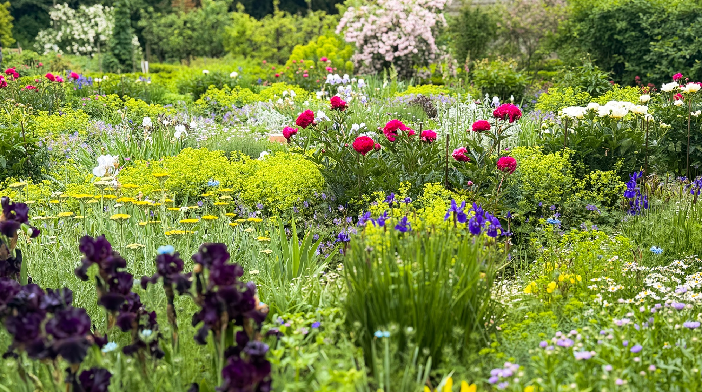
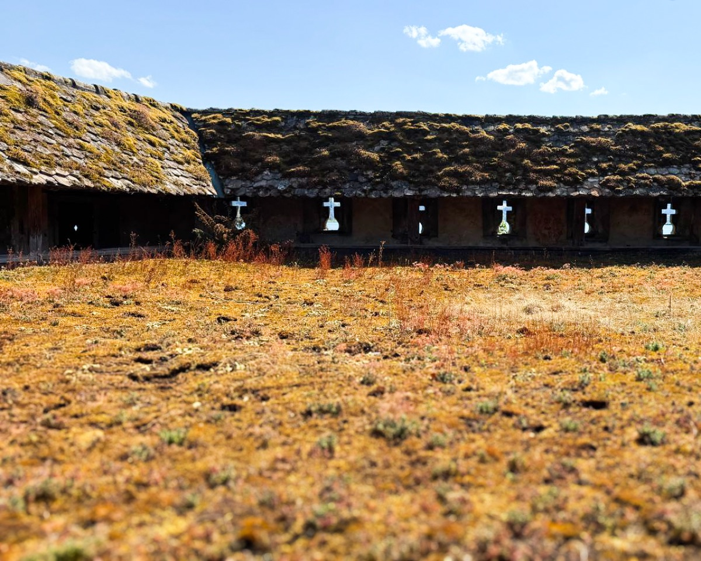
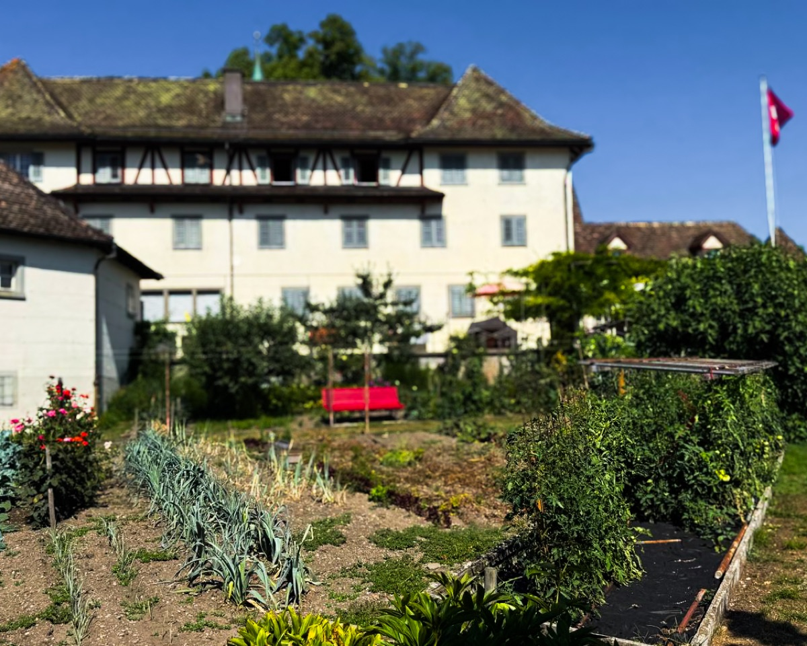
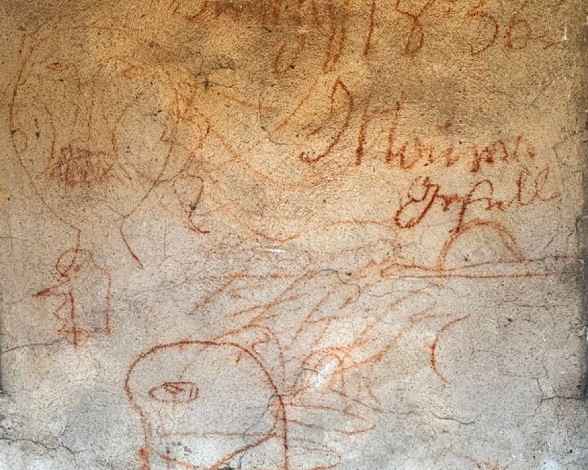
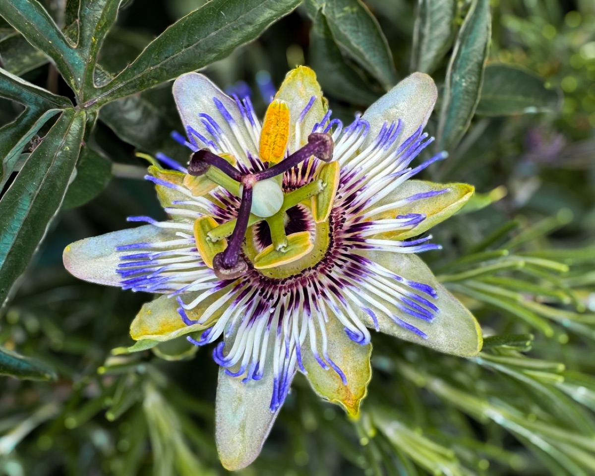
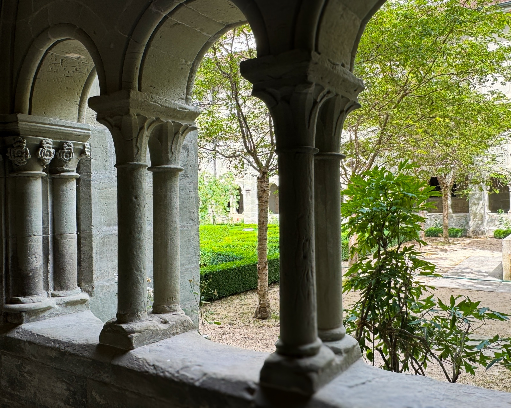
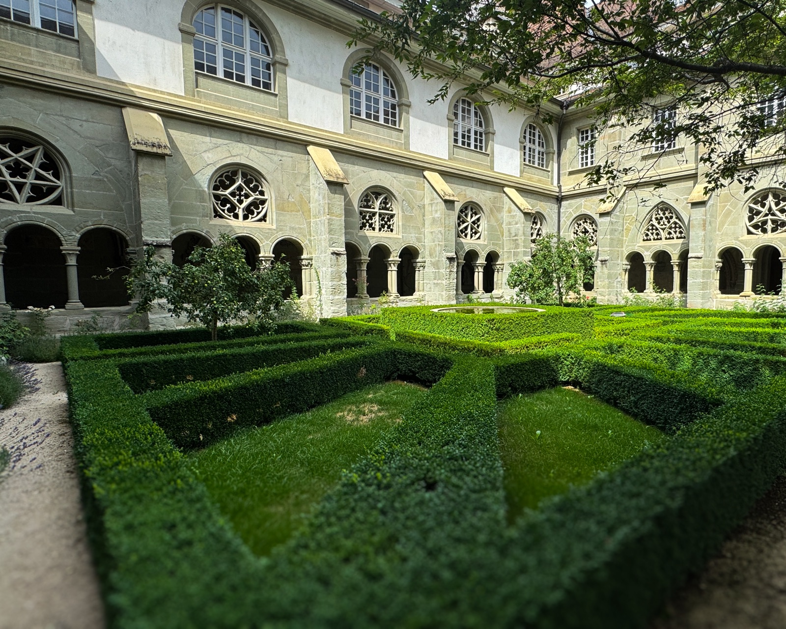

Was wir machen

Klostergärten gehören zu den ältesten Kulturräumen der Schweiz.
Vision
Zugleich schafft es einen Ort der Begegnung für Menschen, die sich für Gartenkultur, Biodiversität, Kulinarik, Heilpflanzen, Spiritualität und klösterliche Wissensgeschichte interessieren. So werden bestehende Initiativen sichtbar gemacht, neue Kooperationen angeregt und Impulse für den Erhalt und die Weiterentwicklung dieses einzigartigen Kulturerbes gegeben.
Plattform
Über Jahrhunderte wurden hier Heilpflanzen kultiviert, Nahrung produziert, Wissen bewahrt und Erfahrungen weitergegeben. Heute befindet sich dieses kulturelle Erbe in einem tiefgreifenden Wandel. Einige Klostergärten sind bereits verschwunden, andere haben sich über Jahrhunderte immer wieder neu erfunden.
Eindrücke






Wandel
Klostergärten sind gefährdetes Kulturerbe.
Wir dokumentieren sie erstmals
umfassend, in einem Buch (2028).
Mitglieder finanzieren, tragen und
vernetzen dieses Projekt.